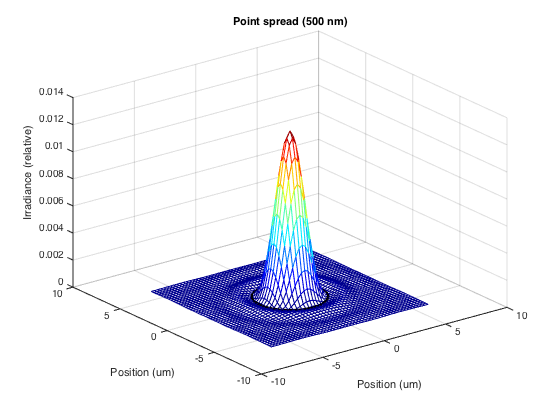

t_airyDisk
Plotting an Airy disk for diffraction limited optics.
Copyright ImagEval Consultants, LLC, 2010.
Contents
Initialize
ieInit;
Build up the spatial structure in an optical image
scene = sceneCreate; oi = oiCreate; oi = oiCompute(scene,oi); % Pull out the optics optics = oiGet(oi,'optics');
Select spatial samples and wavelength for plotting
nSamp = 25; thisWave = 500; units = 'um'; clear fSupport val = opticsGet(optics,'dlFSupport',thisWave,units,nSamp); [fSupport(:,:,1),fSupport(:,:,2)] = meshgrid(val{1},val{2}); % Over sample to make a smooth image. This move increases the spatial % frequency resolution (highest spatial frequency) by a factor of 4. fSupport = fSupport*4; % Frequency units are cycles/micron. The spatial frequency support runs % from -Nyquist:Nyquist. With this support, the Nyquist frequency is % actually the highest (peak) frequency value. There are two samples per % Nyquist, so the sample spacing is 1/(2*peakF) peakF = max(fSupport(:)); deltaSpace = 1/(2*peakF);
Calculate the OTF using diffraction limited MTF (dlMTF)
otf = dlMTF(oi,fSupport,thisWave,units); % Derive the psf from the OTF psf = fftshift(ifft2(otf)); % Make the spatial support for the PSF clear sSupport samp = (-nSamp:(nSamp-1)); [X,Y] = meshgrid(samp,samp); sSupport(:,:,1) = X*deltaSpace; sSupport(:,:,2) = Y*deltaSpace; % Calculate the Airy disk fNumber = opticsGet(optics,'fNumber'); % This is the Airy disk radius, by formula radius = (2.44*fNumber*thisWave*10^-9)/2 * ieUnitScaleFactor(units); % Draw a circle at the first zero crossing (Airy disk) nCircleSamples = 200; [adX,adY,adZ] = ieShape('circle',nCircleSamples,radius);
Plot the diffraction limited PSF.
x = sSupport(:,:,1); y = sSupport(:,:,2); mesh(x,y,psf); colormap(jet) % Label the graph and draw the Airy disk hold on; plot3(adX,adY,adZ,'k.'); hold off; xlabel('Position (um)'); ylabel('Position (um)'); zlabel('Irradiance (relative)'); title(sprintf('Point spread (%.0f nm)',thisWave)); % Return the plotted values to the user. They can retrieve these using % % uData = get(gcf,'userData'); % Note that case sensitivity is ignored udata.x = x; udata.y = y; udata.psf = psf; set(gcf,'userdata',udata);